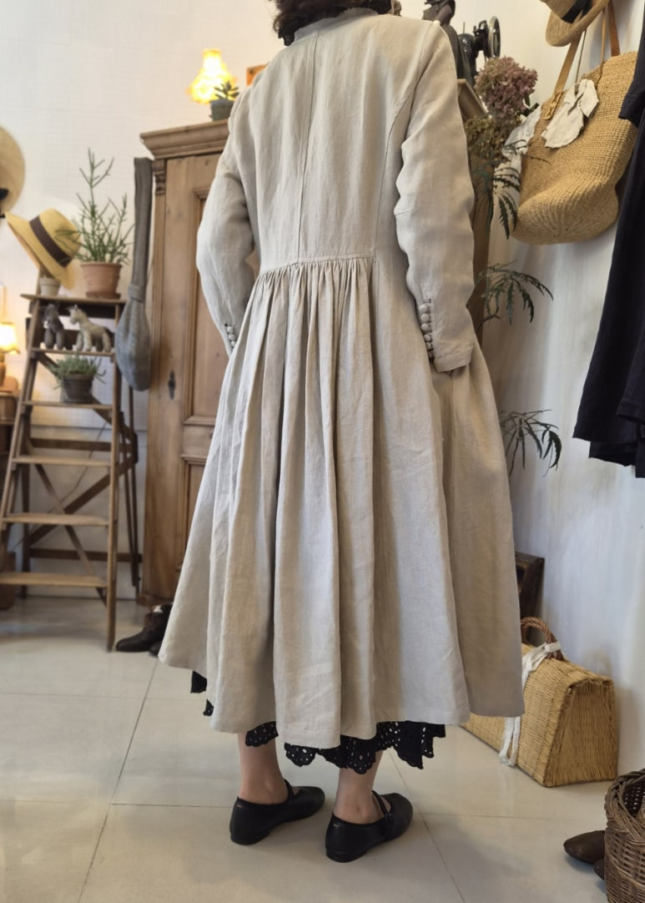
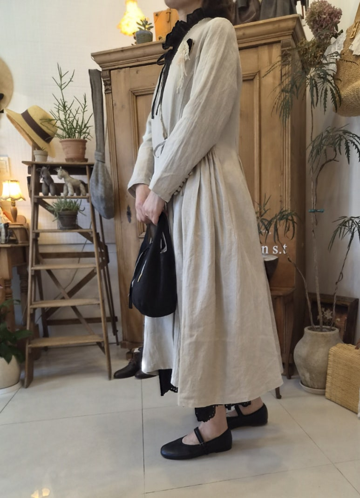
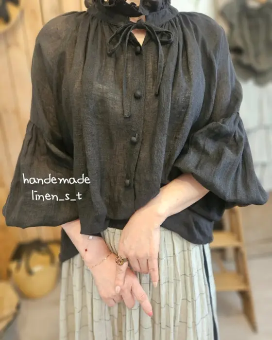

천을 고르고,
선을 그리고.
우리의 방식으로 만드는 옷.
쏘잉트리는 옷과 홈패브릭 소품, 핸드·머신 퀼트를 만드는 일산의 바느질 공방입니다. 의류 브랜드 linen_s_t는 엄선한 수입 원단으로 옷을 직접 제작합니다.
2014년부터 모은 블로그 기록에는, 계절마다 만든 옷과 공방의 일상이 담겨 있습니다. 이 사이트는 그 기록을 한자리에 모은 곳입니다.
공방 이야기 더 보기자연스러운 원단의 결, 오래 입고 싶은 실루엣.
쏘잉트리가 만들어 온 옷의 이야기를 펼칩니다.
2014–2026 · 812개의 기록 · 7,581장의 사진


한 벌의 옷, 여러 장의 이야기.
계절을 지나온 작품들을 천천히 둘러보세요.
조건에 맞는 기록이 없습니다.
쏘잉트리 공식 블로그의 의류 관련 기록을 모았습니다. 사진 속 작품의 판매 여부는 공방에 문의해 주세요.

우리의 방식으로 만드는 옷.
쏘잉트리는 옷과 홈패브릭 소품, 핸드·머신 퀼트를 만드는 일산의 바느질 공방입니다. 의류 브랜드 linen_s_t는 엄선한 수입 원단으로 옷을 직접 제작합니다.
2014년부터 모은 블로그 기록에는, 계절마다 만든 옷과 공방의 일상이 담겨 있습니다. 이 사이트는 그 기록을 한자리에 모은 곳입니다.
공방 이야기 더 보기원단을 고르고 재봉틀로 나만의 옷을 만듭니다.
천으로 가방과 생활 소품을 만듭니다.
손바느질과 재봉틀로 천 조각을 이어 퀼트 작품을 만듭니다.
바느질을 취미로 배우거나 공방 창업을 준비하는 과정입니다.
수강 일정과 비용, 준비물은 공방에 문의해 주세요.
수강 문의하기작품을 만나고, 바느질을 이야기하는 곳.
작품 구매와 수강, 방문은 공방에 문의해 주세요.
경기 고양시 일산동구
산두로109번길 21, 1층